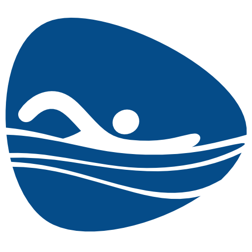
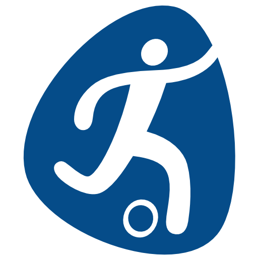
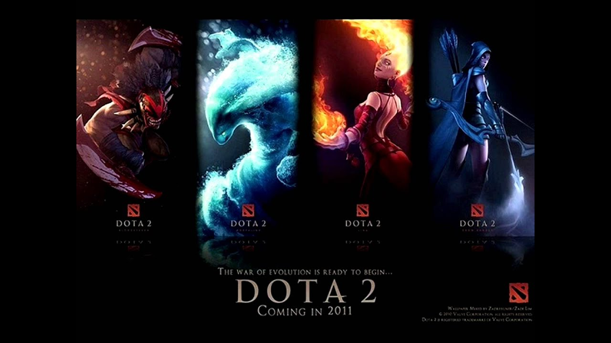
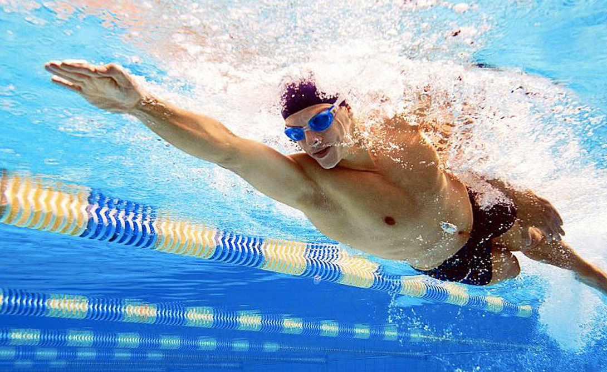

El blog personal de Alex
Estudiante Alex Huaraya V.
Mi nombnre es Alex Huaraya, actualmente soy estudiante de Certus.

Mi canal de Youtube
|
 |
 |
MI HORARIO
| TURNOS | LUNES | MARTES | MIERCOLES | JUEVES | VIERNES |
| MAÑANA | ESTUDIO | ESTUDIO | ESTUDIO | ESTUDIO | DEPORTE |
| TARDE | GYM | LIBRE | GYM | LIBRE | GYM | NOCHE | LIBRE | LIBRE | LIBRE | GYM | LIBRE |
Cosas que me gustan hacer
| VIDEOJUEGOS | NATACION | |
 |
 |
 |
Dota 2 no es solamente un videojuego para pasar el tiempo. Es un juego de estrategia en el que tienes que trabajar en equipo, tomar decisiones constantemente y aprender de tus errores. Cada partida es diferente porque existen muchos héroes, objetos y estrategias. Además, requiere comunicación, concentración y capacidad para adaptarse a las situaciones. Por eso considero que los videojuegos como Dota 2 pueden ser una forma de entretenimiento que también desarrolla ciertas habilidades |
La natación es uno de mis deportes favoritos porque me ayuda a mantenerme activo y también me hace sentir relajado. Me gusta porque puedo disfrutar del agua mientras hago ejercicio y mejoro mi resistencia y coordinación. |
Para mí, el fútbol y Cristiano Ronaldo representan algo más que un deporte: representan la importancia de trabajar por nuestros sueños, aprender de los errores y nunca dejar de mejorar. |